TL;DR
IDA Pro + Jadx + 耐心
使用 jadx 打开 babydroid.apk 然后进到 MainActivity 中看一下, 大致浏览一下代码
package com.q2zy.babyandroid;
public class MainActivity extends AppCompatActivity implements OnClickListener {
private static String TAG = "java";
public static native boolean check(String str);
public static native boolean check0(String str);
public static native boolean check1(String str);
public static native boolean check2(String str);
public static native boolean check3(String str);
public static native boolean check4(String str);
public static native boolean check5(String str);
public static native String stringFromJNI();
static {
System.loadLibrary("a");
}
protected void onCreate(Bundle savedInstanceState) {
super.onCreate(savedInstanceState);
setContentView((int) R.layout.activity_main);
Log.w(TAG, "oncreate");
}
public void onClick(View v) {
EditText editText = (EditText) findViewById(R.id.editText);
TextView tv = (TextView) findViewById(R.id.sample_text);
String input = null;
if (editText != null) {
input = editText.getText().toString();
}
if (tv != null) {
tv.setText(check0(input) ? "flag is your input" : "failed");
}
}
public void xxx() {
Log.w(TAG, "enter xxx");
try {
Log.w(TAG, Thread.currentThread().getContextClassLoader().toString());
} catch (Exception e) {
Log.w(TAG, e.getClass().getName());
Log.w(TAG, e);
Log.w(TAG, MainActivity.class.getClassLoader().toString());
Log.w(TAG, ClassLoader.getSystemClassLoader().toString());
}
Log.w(TAG, "exit xxx");
}
public static void load(String libName) {
try {
Log.w(TAG, "log b in java");
Log.w(TAG, Thread.currentThread().getContextClassLoader().toString());
Runtime runtime = Runtime.getRuntime();
Log.w(TAG, Thread.currentThread().getContextClassLoader().toString());
Method method = Runtime.class.getDeclaredMethod("load", new Class[]{String.class, ClassLoader.class});
method.setAccessible(true);
method.invoke(runtime, new Object[]{libName, classLoader});
} catch (Exception e) {
Log.w(TAG, e);
}
}
public static void loadLibrary(String s) {
System.loadLibrary(s);
}
}
首先,声明了 7 个 checkX native 方法以及一个 stringFromJNI 方法. 然后看到 onClick 中调用了 check0 方法来进行 flag 的检测, 所以我们定位到 liba.so 中. 使用 IDA 打开该 liba.so,查看 check0,如下
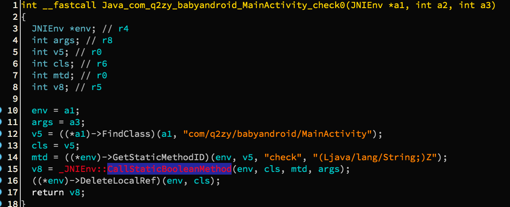调用了 java 层的 native 函数函数 check, 注意参数 args 就是输入的 flag 值. 那么这个 check 函数在哪里实现的呢? 看一下 IDA 的导出表:
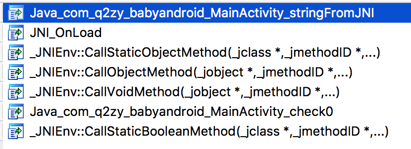没有 check 函数,那么可能就是在 JNI_OnLoad 里面做了手脚,进 JNI_OnLoad 里面看看. 开启 F5 大法, 然后得到如下伪代码:
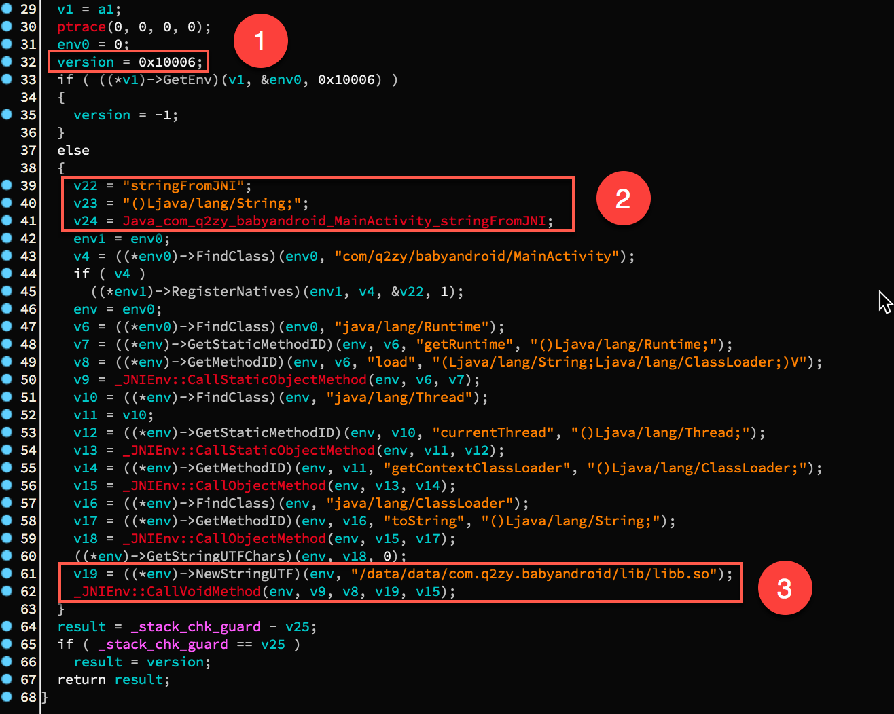1 处是 JNI 的版本,这是个常量. 然后是 2 中注册了一个 stringFromJNI 方法.
动态注册 native 方法的时候用到了一个结构体 JNINativeMethod. 为了方便查看,我们可以在 IDA 中导入一个这样的结构体 (IDA 自带). 我们可以选择 view/subview/structures 打开结构体窗口, 然后按下 insert 键(macbook pro 2017 害我找了好久,这个快捷键组合是 fn+i)来添加结构体, 如下图所示. 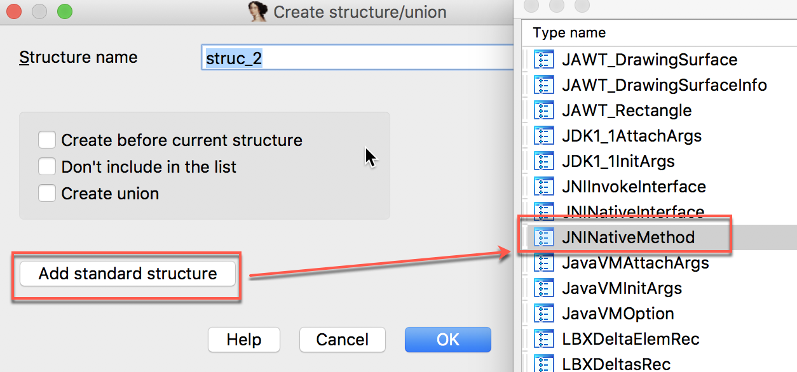 然后回到伪代码窗口将 v22 的类型定义为 JNINativeMethod, 方法命名为 methods, 然后便得到如下结果 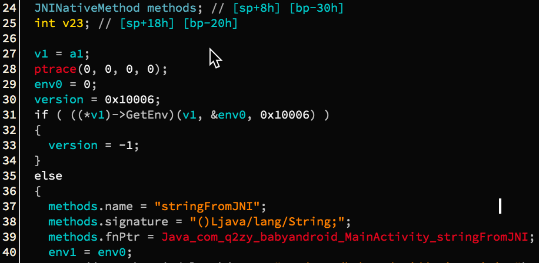
3 处是调用 java 层的 load 函数,对 libb.so 进行加载. 于是用 IDA 打开 libb,会提示 SHT invalid,不用管. 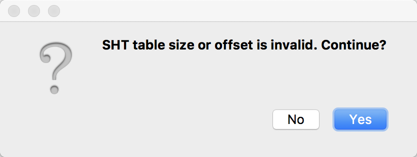 里面只有一个能看到的到处函数 JNI_OnLoad 函数. 那就只能分析这个函数看看做了什么. 然后欣喜的打开 JNI_OnLoad, 结果发现就长这鬼样子. 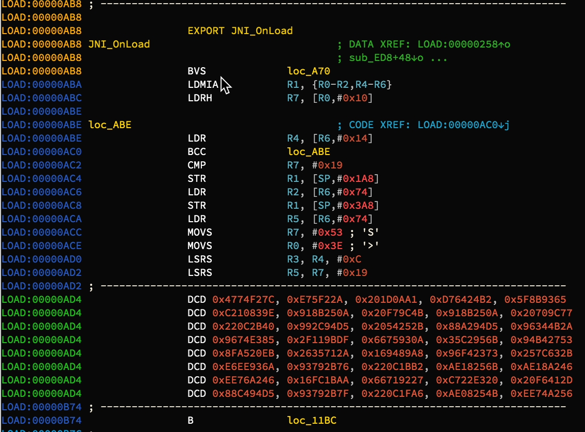
这个时候差不多就走到第一个死胡同了. 我们理一下思路, 程序运行后会首先加载 liba.so 库, libba 在 JNI_OnLoad 中注册了一些 native 函数并加载了 libbb.so, 当用户在文本框输入flag后, 按下按钮,会调用 liba 中的 check0 函数进行检查, 但是 check0 又调用了一个 check 函数,而这个 check 函数又不在 liba 中, 那么应该是在 libb 中. 但是我们看一下 libb 中的 JNI_OnLoad 函数又是一团乱七八糟的 ,应该是加密了,所以肯定有代码在 libb 的 JNI_OnLoad 执行之前执行,那会是谁呢?
看了一下 liba,发现没什么可能,因为当 liba 在其 JNI_OnLoad 中反射调用 Java 层的 load 函数时, 是直接找到系统的库加载函数 load 然后对库 libb 进行加载的. 所以应该是在 libb 加载的时候优于 libb 的 JNI_OnLoad 之前做了一些操作. 比如解密代码.
我先想到的是看看是不是在 .init 中做了处理,但是在 IDA 中看一下段分布, 又是一脸懵逼. 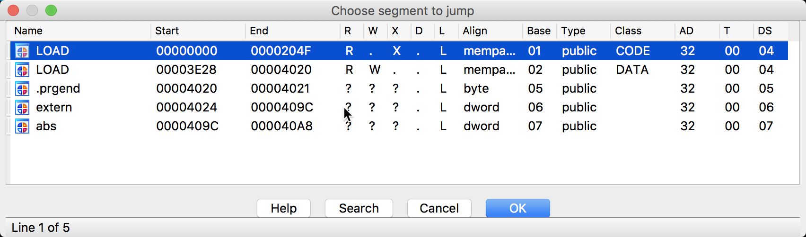 这样子看着像是直接从内存 dump 出来的库. 再看看 liba 中的段 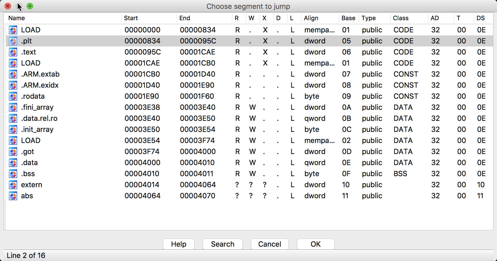 gdb/ida 我都试了,只能断到 libba.so, 在 libb.so 加载的过程中,直接闪退. 我一直想知道是什么反调试, 这么牛逼,连底层函数 fopen 都断不下来. 事实证明,该程序没办法运行,我在实体机上测试了,没有任何调试的环境, 就是一个正常使用的 Android 手机,打开改程序也是直接闪退. 说实话,动态调试以及反调试浪费了我很多时间,后来发现程序本身就不能运行,感觉自己好蠢啊. 我怀疑是不是出题人写这题目的时候,调试自己写的程序,然后等待 libb.so 加载时, 在解密函数中下了一个断点,然后直接 dump 内存,把 libb.so dump 出来,放到程序里面, 然后再打包发给我们.
好吧,不管怎么样,生活还要继续. 没有 .init 段, 只要逻辑正确,总得有人来解密吧, 在 IDA 中看看谁引用了 libb 的 JNI_OnLoad 函数, 然后就找到了解密函数. 通过交叉引用,可以找到如下函数 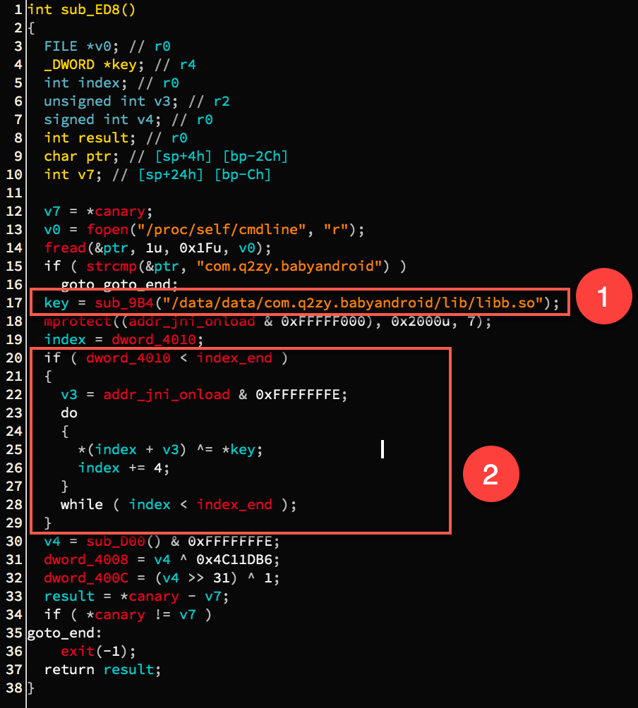 该函数中可以明显看到在 2 处进行一些代码解密,但是用到了一个 key 值, 这个 key 来自 1 处的 sub_9B4 函数,该函数貌是对 libb.so 进行的处理, 于是进入该函数查看,如下 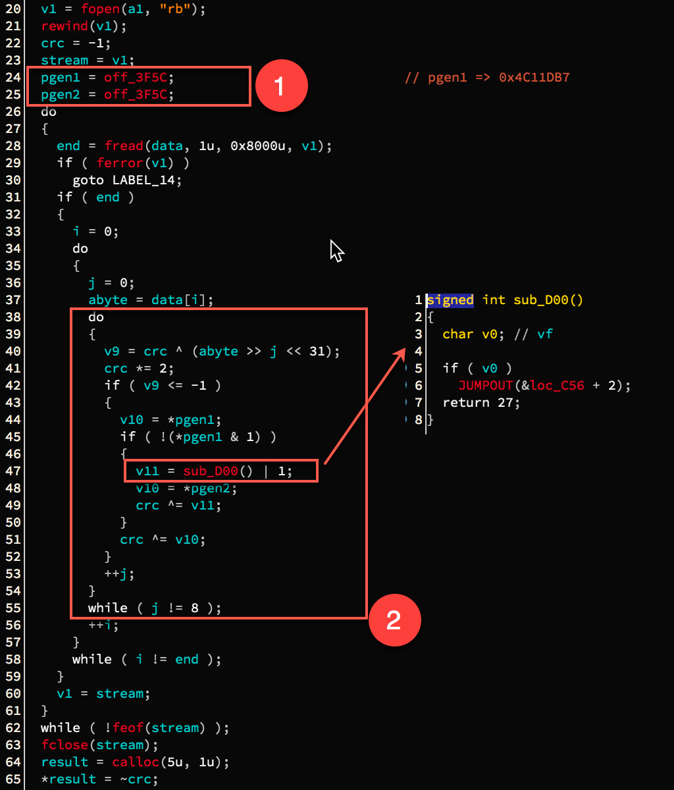 这个代码应该是 crc32 值计算,为什么这么说呢? 当队友第一次说是 crc32 时我也很懵逼, 虽然知道这个东西,但是具体是什么真不太清楚,赛后上网查了查,仔细拜读了这篇文章 Understanding and implementing CRC (Cyclic Redundancy Check) calculation 算是基本上懂了, crc32 的一个典型的生成多项式就是 0x4C11DB7, 这样子就不会很莫名其妙了, 1 处的数值就很好理解了,另外针对 IDA 中的 off_xxx 变量,这里提供我的一个理解.
off_xxx 表示偏移为 xxx 处的值 比如 off_3F5C 处的值为 0x4008,那么 unsgined * pvar = off_3F5C; 就表示指针 pvar 的值为 0x4008,也就是说 pvar 指向的变量值为 *pvar, 也就是偏移 0x4008 处的值. 0x4008 处的值是 0x4C11DB7,典型的 crc32 生成多项式继续看 2 处的代码,这个代码块里面主要是处理一个字节, 里面有一个很奇怪的地方是对 sub_D00() 函数的调用,这个函数的内容也在图上, 看起来又是一脸懵逼, v0 是啥? 咋还 JUMPOUT 了,然后跑到 loc_C56 处看汇编代码, 我相信你会很崩溃的回来的. 我第一次看到这里真的是不知所措, 一方面 crc32 具体实现不熟悉,然后 sub_D00() 的函数体又是莫名其妙, 真做不下去.
这个坎儿第一次是怎么绕过去的呢? 队友说,这个不是解密 JNI_OnLoad 函数嘛, 前面几个字节应该是相同的,既然是一个校验值,还是亦或操作, 找到一个 JNI_OnLoad 完后的 so 文件的前四个字节,然后再找到 libb.so 中 JNI_OnLoad 的前四个字节,再亦或一下不就得到具体的 key 值了吗? 当时虎躯一震,说了一句:牛逼! 一试果然可以正确解密. 当时找到 liba.so 的 JNI_OnLoad 的前四个字节,然后写了如下 C 代码:
// liba.so JNI_OnLoad 方法的前四个字节
unsigned jniload_sig = 0xAF03b5f0;
// libb.so JNI_OnLoad 方法的前四个字节
unsigned encry = 0xc977d6da;
// 得到解密秘钥
unsigned key = jniload_sig ^ encry;
printf("%#x\n", key);
// 输出得到 key = 0x6674632a
这个 key 是正确的,当时没继续看. 了解了 crc32 的实现,现在回过头来看, 上图代码 2 中 sub_D00() 所在的 if 代码块实现是完全多余的, 莫非, 莫非该代码块是不永远不会执行的? 0x4C11DB7 的最后一个数值是 7, 奇数, 所以最低位一定是 1, 那么该值与 1 进行与操作结果一定是 1 咯,然后取反为 0. 执行是不可能的,这辈子都不可能了. 大概这就是出题人的诡计啦. 所以现在我们可以将 IDA 逆向出来的代码复制出来,做适当修改,就得到了一个求 key 的函数. 如下.
unsigned* getkey(const char *a1)
{
FILE *v1; // r6
signed int crc; // r4
int *pgen1; // r5
int *pgen2; // r11
size_t end; // r10
int i; // r6
int j; // r9
unsigned int abyte; // r8
int v9; // r0
int v10; // r0
int v11; // r1
unsigned *result; // r0
FILE *stream; // [sp+0h] [bp-8028h]
char data[32768]; // [sp+4h] [bp-8024h]
int v15; // [sp+8004h] [bp-24h]
v1 = fopen(a1, "rb");
rewind(v1);
crc = -1;
stream = v1;
int gen = 0x4C11DB7;
pgen1 = &gen;
pgen2 = &gen;
// printf("condition = %x\n",(*pgen1) & 1);
do
{
end = fread(data, 1u, 0x8000u, v1);
if ( end )
{
i = 0;
do
{
j = 0;
abyte = data[i];
do
{
v9 = crc ^ (abyte >> j << 31);
crc *= 2;
if ( v9 <= -1 )
{
v10 = *pgen1;
crc ^= v10;
}
++j;
}
while ( j != 8 );
++i;
}
while ( i != end );
}
v1 = stream;
}
while ( !feof(stream) );
fclose(stream);
result = calloc(5u, 1u);
*result = ~crc;
return result;
}
好的,我们清除了第一个障碍,回到解密 JNI_OnLoad 的例程,可以写如下解密代码了
void decrypt_jnionload(unsigned key) {
FILE* fso = fopen("./libb.so", "rb");
char so[0x40b0];
memset(so, 0, 0x40b0);
int cnt = fread(so, 1, 0x40b0, fso);
#ifdef DEBUG
printf("Read %#x bytes\n", cnt);
for(int i = 0;i < 0x10; ++i) {
printf("%x\n",so[i]);
}
printf("\n");
#endif
unsigned* encry = (unsigned*)(so + 0xab8);
printf("First four bytes: %#x\n", *encry);
for(unsigned* k = encry; k < encry + 0x420; ++k) {
/*printf("BEFORE: %x\n", *k);*/
*k ^= key;
/*printf("AFTER: %x\n", *k);*/
}
fclose(fso);
FILE* fwso = fopen("./libb-decrypt-jnionload.so", "wb");
fwrite(so, 1, 0x40b0, fwso);
fclose(fwso);
}
这个代码基本上就是看着 IDA 写的, 很简单. 这样我们调用这两个函数就可以解密了. 如下所示.
int main() {
const char* fname = "./libb.so";
unsigned *key = getkey(fname);
printf("Check sum is %#x\n", *key);
// 通过秘钥解密 libb.so 生成 libb-decrypt-jnionload.so
decrypt_jnionload(*key);
return 0;
}
现在我们打开解密之后的 libb-decrypt-jnionload.so 文件,定位到 JNI_OnLoad 函数, 开启 F5 大法后有如下图 1 中的一大坨数值: 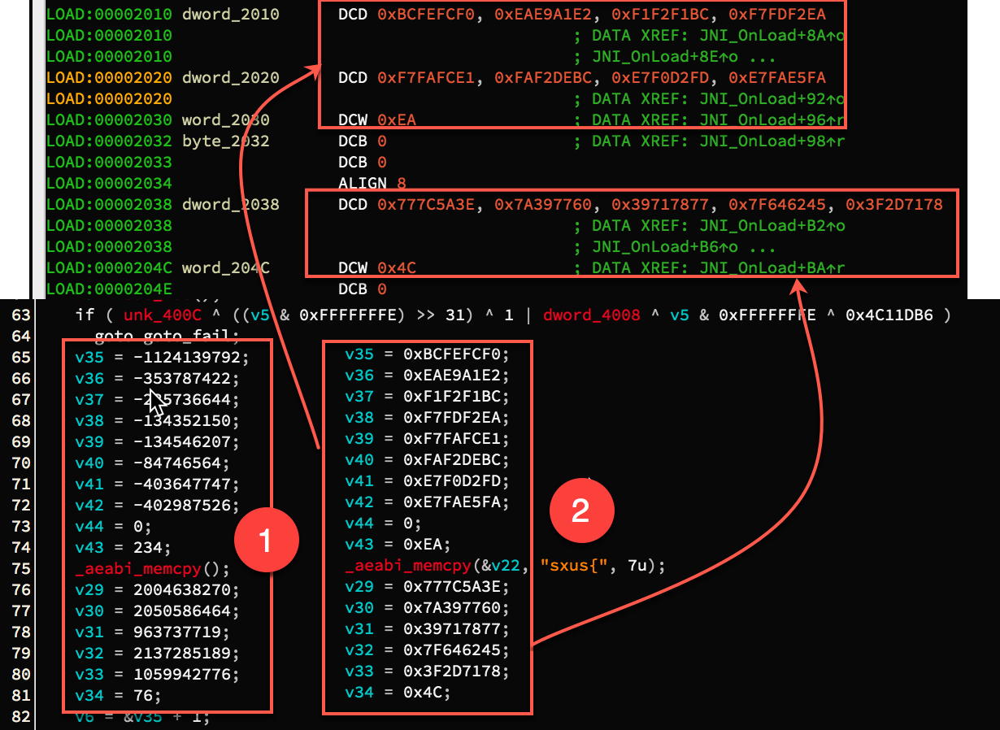 这怎么搞? 我们注意到其中的函数 memcpy 函数原型好像不对,我们修改一下,其原型为:
int __cdecl _aeabi_memcpy(void *, const void *, size_t)我只所以把这个截个图出来,是想说, IDA 有时候自己不能正确识别一个函数, 导致反编译之后的代码中,有的变量莫名其妙,找不到来源. 当我们修改完 memcpy 的原型后, 就可以得到了一个有用的变量,另外尽量以变量的十六进制形式显示,比较友好, 结果如 2 处所示. 另外这些数值是干什么的呢? 我们看一下它们在内存中的位置, 发现 2 处上半部分的变量位于连续的内存中,下半部分的变量值也位于连续的内存中. 基本上可以的断点是一个数组.为了方便我重新命名上下部分的数组分别为 aChunk, bChunk 而指向它们的指针则分别为 pAChunk,pBChunk.
下面继续来看代码,解密两个神秘数组,和一个不知道从哪里冒出来的 v23 变量 (在 IDA 反编译窗口中找不到来源). 如标记 1 处所示. 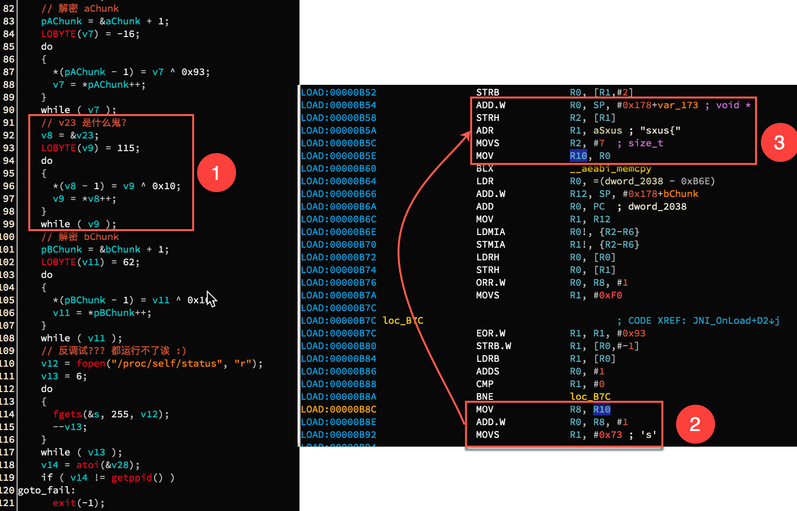 解密数组容易搞定,但是这个没有来源的 v23 怎么办? 回到汇编代码看来源.如标记2,3 所示. 标记 2 中的 R10 中存放的就是 v23 的地址, 往上回溯,找到标记 3,可以发现原来是 memcpy 的第一个参数. 这下就可以去看 memcpy 的第二个参数了,到此为止,上图中的所有解密都可以轻易完成, 因为这三个解密例程很类似,我们编写一个 idapython 脚本函数来解密. 如下
def decrypt(addr, initkey, key):
cnt, savedaddr = 0, addr
loopkey = initkey
addr += 1
while True:
cnt += 1
b = loopkey ^ key
bb = idc.Byte(addr - 1)
idc.PatchByte(addr - 1, b)
print('[+] %s => %s' % (hex(bb), hex(idc.Byte(addr - 1))))
addr += 1
loopkey = idc.Byte(addr)
if(not idc.Byte(addr - 1)):break
print("[*] Decrypt and patch %d bytes from %s ." % (cnt, hex(savedaddr)))
在 IDA 中导入脚本后,然后依次执行如下三行命令即可
decrypt(0x2010,0xf0,0x93); decrypt(0xcb4,0x73,0x10); decrypt(0x2038,0x3e,0x16)
得到如下结果 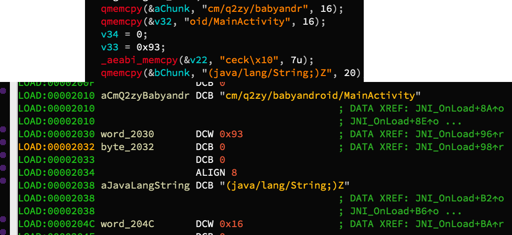 尽管 IDA 反编译窗口不能显示完全,但又不是不能看....继续看,对一些变量重命名之后, 得到的结果如下 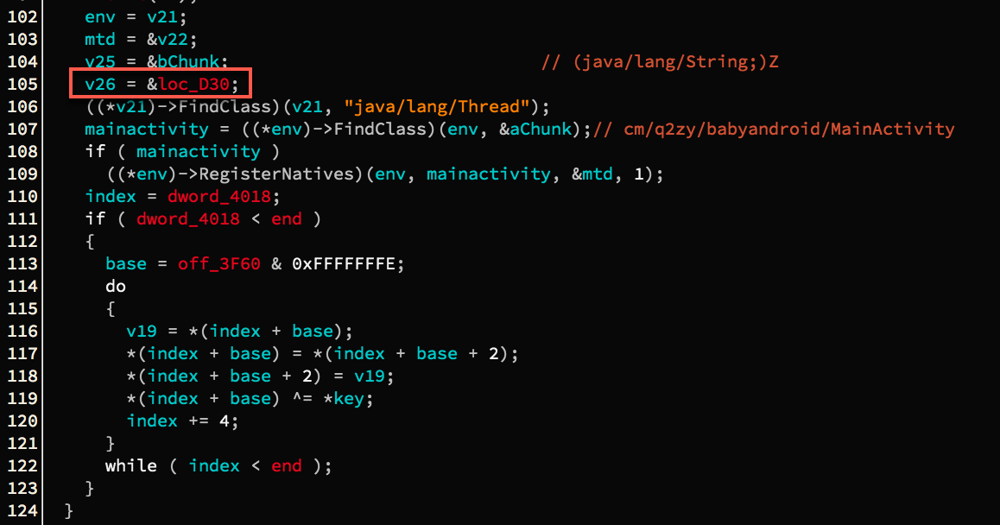 解密代码很清晰了,再写一个 idapython 函数如下,注意其中的 loc_D30.
def decrypt_tail():
index, end = 0x27c, 0x420
base = 0xAB9 & 0xFFFFFFFE
key = 0x6674632a
while True:
curaddr = base + index
word = idc.Word(curaddr)
idc.PatchWord(curaddr, idc.Word(curaddr + 2))
idc.PatchWord(curaddr + 2, word)
idc.PatchDword(curaddr, idc.Dword(curaddr) ^ key)
index += 4
if(index >= end):break
当运行完解密代码后,loc_D30 处就变成了一个函数 sub_D30(). 因为调用 RegisterNatives 中的 mtd无法追踪到, 于是我们转而追踪 sub_D30(). 进入该函数,结果如下 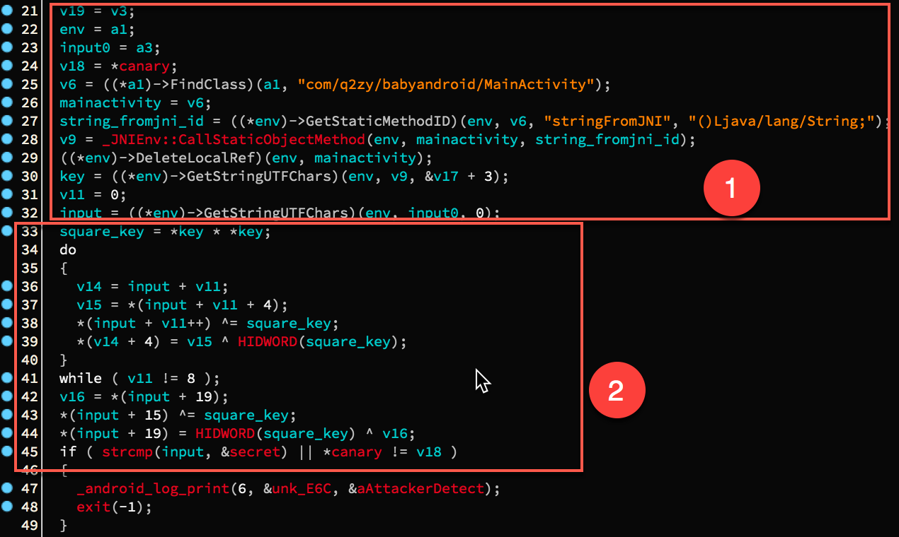 标记 1 主要是生成准备读取用户输入的 flag( 特别是 1 中的 input0, 多谢 lu 师傅提醒). 然后看标记2,主要的解密例程,亦或操作,该过程可逆,所以可反推flag,从哪里反推, 从secret 变量开始. 编写 idapython 解密函数,如下
def decrypt_final():
# 1: 获取加密后的字节数组
secret = []
secret_base = 0xe54
while True:
b = idc.Byte(secret_base)
if(not b):break
secret.append(hex(b)[2:].zfill(2))
secret_base += 1
# 2: 从 list 中索引 index 处获得一个整数
def getint_fromlist(index, lst):
end = len(lst) - 1 if index + 3 > len(lst) - 1 else index + 3
num = ""
for i in range(end, index - 1, -1):
hx = lst[i]
num += hx
return int(num,16)
# 3: 在 list 索引 index 处放入一个整数 num
def setint_tolist(index, lst, num):
num = hex(num)[2:].zfill(8)
numlst = re.findall(r".{1,2}", num)
lsb = numlst[-1::-1]
end = len(lst) - 1 if index + 3 > len(lst) - 1 else index + 3
lst[index:end + 1] = lsb[0:end + 1 - index]
# 4: 模拟加密(a)
key = 0x6674632a
square_key = key * key
v = getint_fromlist(19, secret)
setint_tolist(19, secret, (square_key >> 32) ^ v)
vv = getint_fromlist(15, secret)
setint_tolist(15, secret, vv ^ square_key)
# 5: 模拟加密(b)
for i in range(8):
v = getint_fromlist(i, secret)
num = getint_fromlist(i + 4, secret)
setint_tolist(i, secret, v ^ square_key)
setint_tolist(i + 4, secret, num ^ (square_key >> 32))
# 6: 打印 flag
flag = [chr(int(c,16)) for c in secret]
print("[+] flag is %s" % (''.join(flag)))
好吧,我知道你看到这个函数可能很头疼,写的是什么意思啊,本着写东西就是为了让别人看懂的原则, 我来解说一下这个函数的意思.
#1 节用于获取加密后的字节数组, 其基地址是 0x54,存放时要保证存放每个字符的十六进 制形式,不包括前缀 0x,且长度为2. 比如一个字节为 0xf,则应该去掉 '0x' 并补 0 得到 "0f" 放入列表中,该列表诸如 lst = ["01","00","0a","1b","2c"] 等形式, 以实际内存存储字节的方式来存储字节序列.
#2 和 #3 主要用于从列表中获取一个整数,由于是小段序列,所以我们获取整数时, 需要从后往前读取. 比如说从 lst 中获取索引 0 处的整数,得到的是 0x1b0a0001. 则 getint_fromlist(0,lst) 返回一个整数 0x1b0a0001. 而setint_tolist 恰好相反, 对输入的数值,先转换为十六进制字符串, 然后 0 填充至长度为 8,写入 lst 的时候要按照小段序列填充.
#4 和 #5 就是按照加密顺序在反向加密一下,这个对照 IDA 的反编译代码和 #2,#3 处的辅助函数, 不是很难理解.
#5 处就是打印输出 flag.
执行该函数后输出如下
Python>decrypt_final() [+] flag is 1nTr3stIng-AnDr0id-A&D!
Any question? 欢迎联系我,交朋友或者探讨问题,都 OK!
最后感谢 swing 我才得以能够加入这个战队,并参加 *ctf 这个比赛,虽然我是猪队友, 但是收获很多,非常感谢. 在做 babydroid 这道题时,也十分感谢 lu 师傅对我的指导.